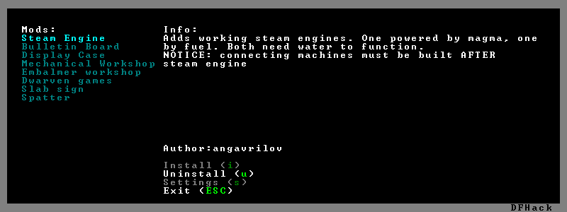

gui/mod-manager¶
This tool provides a simple way to install and remove small mods that you have
downloaded from the internet – or have created yourself! Several mods are
available here. Mods that you want
to manage with this tool should go in the mods subfolder under your main
DF folder.
The mod manager must be invoked on the Dwarf Fortress title screen, before a world is generated. Any mods that you install will only affect worlds generated after you install them.
Usage¶
gui/mod-manager
Mod format¶
Each mod must include a lua script that defines the following variables:
- name:
The name that should be displayed in the mod manager list.
- author:
The mod author.
- description:
A description of the mod
Of course, this doesn’t actually make a mod - so one or more of the following variables should also be defined:
- raws_list:
A list (table) of file names that need to be copied over to DF raws.
- patch_entity:
A chunk of text to use to patch the
entity_default.txtfile.- patch_init:
A chunk of text to add to the
init.luafile in the raws.- patch_dofile:
A list (table) of files to run from
init.lua.- patch_files:
A table of files to patch, each element containing the following subfields:
- filename:
A filename (relative to the raws folder) to patch.
- patch:
The text to add.
- after:
A string after which to insert the text.
- guard:
A token that is used in raw files to find additions from this mod and remove them on uninstall.
- guard_init:
A token that is used in the
init.luafile to find additions from this mod and remove them on uninstall.- [pre|post]_(un)install:
Callback functions for each installation/uninstallation stage that can be used to trigger more complex install behavior.
Screenshot¶
